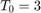
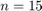
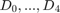

Práctica 5: Series de Fourier en tiempo continuo
Autores:
- Argaez Herrera Antonia Margarita
- Leguizamo Lara Daniela Denisse
- Rojas Solis Juan Carlos
Grupo: 2TV1
Profesor:
Dr. Rafael Martínez Martínez
Contents
Objetivos
- Realizar gráficas de series de Fourier exponenciales y trigonométricas en tiempo continuo
- Manipulación de instrucciones en MATLAB
- Calculo númerico de los coeficientes de Fourier
Introducción
Desarrollo
Para el desarrollo se tienen que resolver cada uno de los siguientes problemas comenzando una nueva sección (para la publicación) en cada uno de ellos.
Para cada problema debes de realizar
- Realizar el programa de la serie que se indica
- Gráfica de la serie de Fourier en un intervalo que muestre 5 repeticiones
- Gráfica de la señal y la serie de Fourier para 4 armonicos
- Gráfica del error
- Gráfica de la energía del error
- Espectro de magnitud para 4 armonicos
- Espectro de fase para 4 armonicos
- Todo lo anterior para 15 armonicos
Problema 1
- Ejemplo 6.1 Con serie y espectro trigonometrico, no es necesario entregar el código, solo la aplicación al problema especifico, debe de indicar la función y los valores de sus coeficientes (sin incluir el procedimiento)
Con 4 armonicos
close all; clear all; a0=0.504; an=@(n) 0.504*(2/(1+16*n^2)); bn=@(n) 0.504*(8*n/(1+16*n^2)); t0=0; tf=pi; f=@(t) exp(-t/2); armo=4; a=-7; b=7; sft(t0,tf,a0,an,bn,f,armo,a,b)
Con 15 armonicos
close all; clear all; a0=0.504; an=@(n) 0.504*(2/(1+16*n^2)); bn=@(n) 0.504*(8*n/(1+16*n^2)); t0=0; tf=pi; f=@(t) exp(-t/2); armo=15; a=-7; b=7; sft(t0,tf,a0,an,bn,f,armo,a,b)
Problema 2
- Ejemplo 6.2. Con serie y espectro exponencial y A=3, no es necesario entregar el código, solo la aplicación al problema especifico, debe de indicar la función y los valores de sus coeficientes (sin incluir el procedimiento)
Con 4 armonicos
close all; clear all; A=3; d0=0; dn=@(n) (A*exp(-(pi*n*3i)/2)*(exp(pi*n*1i) - 1)*(2 + pi*n*1i + n*pi*exp(pi*n*1i)*1i - 2*exp(pi*n*1i)))/(2*n^2*pi^2); t0=-1/2; tf=3/2; g=@(t) 2*A*t*(t>=-1/2 & t<=1/2); h=@(t) 2*A*(1-t)*(t>=-1/2 & t<=1/2); f=@(t) g(t)+h(t); armo=4; a=-7; b=7; sfc(t0,tf,dn,d0,f,armo,a,b)
Error using * Incorrect dimensions for matrix multiplication. Check that the number of columns in the first matrix matches the number of rows in the second matrix. To perform elementwise multiplication, use '.*'. Error in SySPrac5>@(t)2*A*t*(t>=-1/2&t<=1/2) Error in SySPrac5>@(t)g(t)+h(t) Error in sfc (line 34) plot(t1,f(t1),'r','LineWidth',2) Error in SySPrac5 (line 96) sfc(t0,tf,dn,d0,f,armo,a,b)
Problema 3
- Ejemplo 6.4. Con serie y espectro exponencial, no es necesario entregar el código, solo la aplicación al problema especifico, debe de indicar la función y los valores de sus coeficientes (sin incluir el procedimiento)
Problema 4
- Ejercicio 6.5. Con serie y espectro exponencial, no es necesario entregar el código, solo la aplicación al problema especifico, debe de indicar la función y los valores de sus coeficientes (sin incluir el procedimiento)
Problema 5
- Ejemplo 6.7. Con serie y espectro exponencial y  sin incluir la gráfica de f, error ni energía del error, no es necesario entregar el código, solo la aplicación al problema especifico, debe de indicar la función y los valores de sus coeficientes (sin incluir el procedimiento)
Problema 6
- Elabore un código similar al COMPUTER EXAMPLE C6.2 que se encuentra al final de la sección 6.2 de Lathi para el Ejempo 6.2 con los datos indicados anteriormente (no utilice inline)
Problema 7
- Elabore un código que implemente el algoritmo de trapecio compuesto para , Utilice este código para aproximar  del ejemplo de la práctica. Ahora implemente el código COMPUTER EXAMPLE C6.4 que se encuentra al final de la sección 6.6 de Lathi, y calcule nuevamente los coeficientes del ejemplo propuesto. Muestre una tabla que contenga los coeficientes mencionados calculados con los dos algoritmos y de forma exacta, ¿Qué algortmo aproxima mejor a los coeficientes?, para esto compare los coeficientes con el valor absoluto de la resta.
Referencias
[1] https://la.mathworks.com/matlabcentral/answers/94495-how-can-i-create-animated-gif-images-in-matlab
[2] https://latex2png.com/
[3] https://www.quora.com/How-do-I-add-a-GIF-image-using-HTML-code